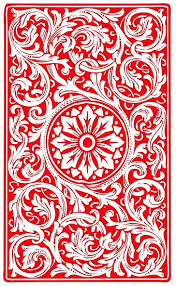

Opponent hand size: {{ opponentHand.length }}
Each player is dealt seven cards. The remaining cards are placed face down in the center of the table, forming a draw pile. The top card of the draw pile is turned face up to start the discard pile next to it. First player adds to the discard pile by playing one card that matches the top card on the discard pile either by suit or by rank (i.e. 6, jack, ace, etc.). A player who cannot match the top card on the discard pile by suit or rank must draw cards until he can play one. When the draw pile is empty, a player who cannot add to the discard pile passes his turn. All eights are wild and can be played on any card during a player's turn. When a player discards an eight, he chooses which suit is now in play. The next player must play either a card of that suit or another eight. The first player to discard all of his cards wins.